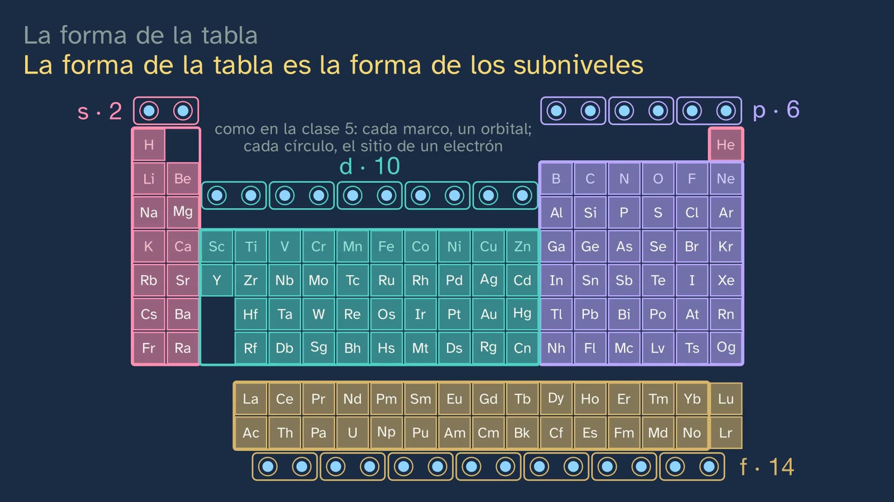
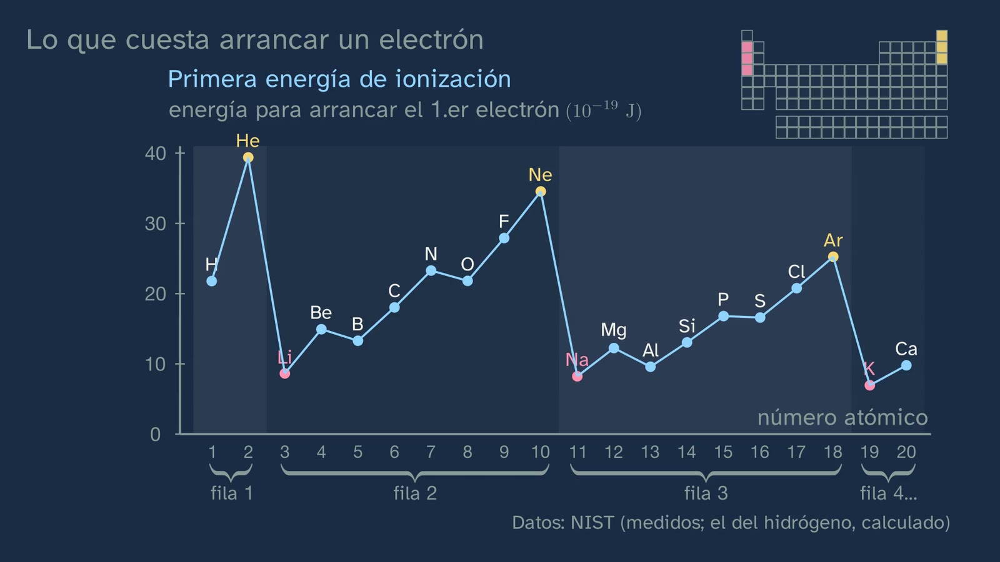
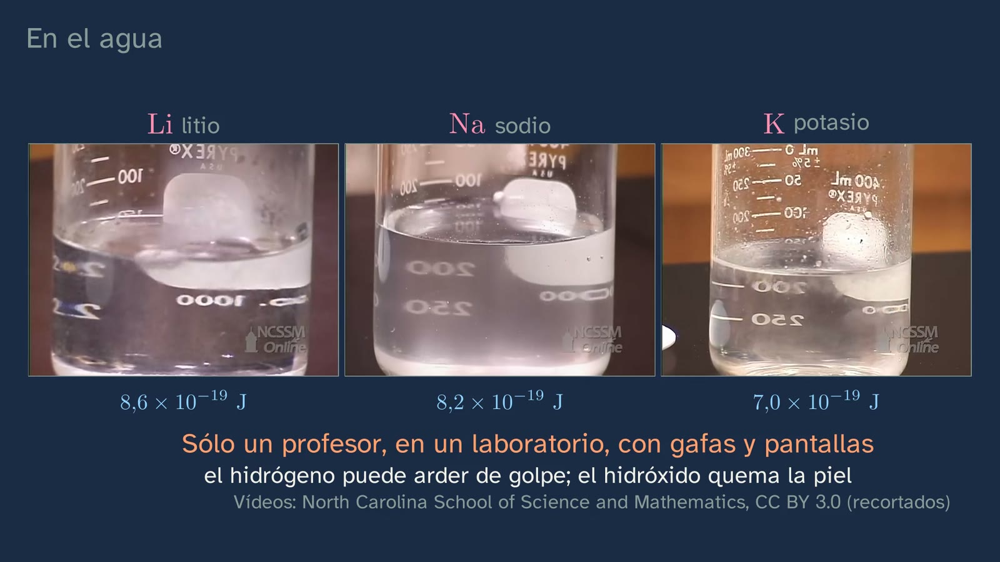

Inside the periodic table
In a nutshell
This is the class that closes the topic, and it brings its two halves together: Mendeleev's table, from class 1, and the electron configuration, from class 5. It starts with the real 1869 table, rotated, with lithium, sodium and potassium in the same row, twenty-eight years before the electron was discovered. And all three end the same way. Coincidence?
First comes the shape of the table, filling it electron by electron. Shell 1 only has 1s, which is why the first row has two boxes; helium goes with the noble gases even though it ends in s. Rows 2 and 3 have eight, and the ten missing from shell 3, those of 3d, appear in row 4, because they fill after 4s. That gives four blocks of 2, 6, 10 and 14 columns: the shape of the table is the shape of the subshells. The f block goes separately so that it fits, and its strip has fifteen elements, not fourteen, because one goes to group 3, and which one is still being debated.
With that, the period and the group are read from the configuration, with two rules: the period is the number of the valence shell, and the group comes from its electrons (plus ten if it ends in p; plus those of d if it ends in d). There is one example in full, chlorine, another to complete, iron, and one the other way round: period 2, group 17, fluorine.
Then, the answer to the hook: the elements in a column are alike because they end the same way, and in a reaction what counts is the outer shell. The alkali metals lose one, chlorine gains one, and that is why LiCl, NaCl and KCl are written the same way.
What changes is seen with two measurements. Size, with the typical mistake "more electrons, bigger" taken apart with shielding: +1 in sodium against +7 in chlorine. And the first ionisation energy of the first twenty elements (NIST), which draws the rows of the table, but only if they are ordered by atomic number: with argon and potassium swapped, the graph breaks. The real videos of lithium, sodium and potassium in water test the prediction, and the class goes back to Mendeleev's gaps: germanium has the same ending as silicon and tin.
For readers outside Spain: the Bachillerato is the last two years of secondary school (ages 16–18). The video is in Spanish, with English subtitles; its on-screen labels keep their Spanish text: capa is shell, subnivel is subshell, fila is row, columna is column, periodo is period, grupo is group and bloque is block. The voice says that the ten inner electrons tapan, cover, ten of the nucleus's charges. In Spain the decimal separator is a comma (on the board, 8,6 × 10⁻¹⁹ J means 8.6 × 10⁻¹⁹ J); this English sheet uses points, and writes powers of ten with × (6.69 × 10⁻¹⁹, which the Spanish sheet writes as 6,69·10⁻¹⁹). Z is the atomic number.
Curriculum
Spain's Royal Decree 243/2022, Physics and Chemistry (consolidated text in the Official State Gazette, BOE). Our translation of the official Spanish text.
- Core knowledge (block A):
- "Development of the periodic table: historical contributions to its present form and its importance as a tool for predicting the properties of the elements."
- "Electronic structure of atoms after analysing their interaction with electromagnetic radiation: explanation of the position of an element in the periodic table and of the similarity in the properties of the chemical elements of each group."
- Specific competences: SC1 (explaining phenomena with laws and theories: why the alkali metals react in the same way), SC2 (formulating hypotheses and validating them with evidence: predicting the peaks and the reaction with water, and checking it) and SC3 (interpreting information in different formats: configurations, the table and a graph of real data).
- Assessment criteria:
- 1.1: the reaction of the alkali metals with water, explained with the outer shell.
- 2.1: predicting where the peaks of the ionisation energy will be and which of the alkali metals reacts most violently.
- 2.2: two measurements for the same idea: size and ionisation energy.
- 2.3: integrating theory into validation: the configuration explains the rows that a measurement draws.
- 3.3: placing an element in the table from its configuration, and the other way round.
How the class is built
Video chapters
About twenty minutes (20:28), in twelve chapters. It follows the department's model: predict, observe and explain. The thread is lithium, sodium and potassium: they open the class in the 1869 table, give Mendeleev his answer, show size and the drop in the graph, and end up in water.
| Chapter | What happens | Why this way |
|---|---|---|
| What we'll see (0:00) | Abril says hello; the map of the topic; what students will be able to do by the end. | To place the class and its objective. |
| What you already know (0:27) | What were Mendeleev's gaps good for? For predicting: gallium, scandium and germanium. | To recall class 1, which is explained today. |
| Last class's solutions (0:55) | Ca and Ca²⁺, S²⁻ and lithium. The calcium ion and the sulfide ion end like argon; lithium, like sodium and potassium. | Brief, with their question on screen; the third one prepares the hook. |
| What Mendeleev saw (2:06) | The real 1869 table, rotated: lithium, sodium and potassium in the same row, without knowing anything about electrons. Coincidence? | A question the class answers with what students already know. |
| The shape of the table (2:57) | Prediction: where does the shape come from? It is filled box by box: helium, set apart; eight and eight; the ten of 3d, in row 4. The four blocks and the f block, with its fifteen. | The shape is deduced, not given: this is what nobody tells you. |
| Reading the table (6:21) | The two rules, chlorine in full, iron to complete and fluorine the other way round. | The objective of the class, with worked examples that are gradually withdrawn (article 14). |
| Why a column is a family (9:17) | They end the same way, and what counts is the outer shell: sodium's 2nd electron costs nine times more. Li⁺, Na⁺, K⁺ and Cl⁻; the noble gases and the halogens; hydrogen, set apart. | The answer to the hook. |
| The size of an atom (10:50) | Prediction: sodium or chlorine? Sodium. +1 against +7: along a row, the atom shrinks; going down, it grows. | The typical mistake, taken apart with what was seen in class 5. |
| What it takes to pull an electron off (12:43) | Prediction of the peaks; the NIST graph; argon and potassium, swapped live; along a row it costs more and going down, less; that is why almost all the elements are metals. | An independent measurement draws the rows; the mistake about mass, with a new pair. |
| Lithium, sodium and potassium in water (15:27) | Prediction and three real videos: it fizzes, it runs about molten, it burns with a lilac flame. And safety. | Seeing what was predicted, with data under each one. |
| Mendeleev's gaps, explained (16:23) | Silicon, germanium and tin: the same ending, one shell further out. When a theory deserves trust. | The hook is closed and the class thinks about science itself (article 15). |
| Practice and keep thinking (17:44) | Summary, three exercises, the open question and the letters of the blocks, which come from light. | It closes the topic and ties it to classes 2 to 5. |



A plan for a 50-minute lesson
- Before the video (5 min). The questions in "Before watching the video" on the student sheet.
- The video, in sections (28 min). Pause at each prediction (3:15, 11:08, 13:04, 15:40), at iron (8:07), at the reverse exercise (8:35) and at "The key point so far" (9:17).
- The activity (12 min). "The blank table" (see "A classroom activity").
- Wrap-up (5 min). The three exercises and the open question, for homework.
What the class simplifies, and why
- "+1" and "+7". This is shielding counted only with the ten inner electrons, the same simplification the RSC uses ("core charge of (11–10=) +1", Taber), and the class says it is an approximate count. The true effective charges are 2.20 and 6.10 with Slater's rules, and 2.51 and 6.12 with Clementi and Raimondi (1963): sodium feels a little more than +1, because the inner electrons don't cover it completely, and chlorine a little less than +7, because the electrons in its own shell also cover one another. The order and the large difference hold.
- The radii. They are the covalent radii of Cordero et al. (2008), a single table for all the elements. With them, sodium (166 pm) is 1.63 times chlorine (102 pm). With other scales, the ratio ranges from 1.57 (Pyykkö) to 2.41 (Clementi); with van der Waals radii it is 1.37, and on that scale magnesium (251) comes out bigger than sodium (250). That is why the class says that size depends on how it is measured.
- The group rule. Tested with NIST's real configurations on the 75 elements with an assigned group, it only fails for helium (which the class sets apart) and palladium ([Kr] 4d¹⁰, which comes out right using the diagonals). With chromium and copper it also works, because it adds ns and (n−1)d.
- Group 3. IUPAC has not decided whether it is made up of Sc, Y, La and Ac or of Sc, Y, Lu and Lr: its project 2015-039-2-200 ended with a provisional report (Scerri, 2021) that calls it a matter of convention. The class puts it like this: "chemists are still debating it".
- 3d, in row 4. It fills after 4s in potassium and calcium. From scandium on, 3d lies lower (class 5), but the place in the table comes out the same.
- "Faster, because they give it up more easily". This is the explanation that exams ask for (chemguide). The full one adds more: lithium gives off even more energy per mole (−222 kJ/mol, against −184 for sodium and −196 for potassium), but it doesn't melt and it reacts slowly. And the violence of sodium and potassium starts with a Coulomb explosion: the metal releases so many electrons at once that the positive ions left behind repel each other and make it burst apart (Mason et al., 2015). The class says "faster" and "more violently", never "with more energy".
- "Going down, it costs less". It holds down to caesium (3.89 eV). Francium, below it, costs a little more (4.07 eV, NIST): its electrons move so fast that relativity is needed to explain it.
- Argon and potassium. The Earth's argon is almost all argon-40 (22 neutrons), which comes from the decay of potassium-40 in rocks; potassium is almost all potassium-39 (20 neutrons). Argon's mass (CIAAW) is an interval, [39.792, 39.963], because it changes depending on where the argon comes from; even its lower end is above potassium's (39.0983).
- "The inner electrons almost never take part". This holds for the s and p blocks. In the d block, the (n−1)d electrons do take part: iron forms Fe²⁺ and Fe³⁺.
- "The four that were missing". In 2016, elements 113, 115, 117 and 118 received their names; 114 and 116 had had theirs since 2012.
- The noble gases "hardly react". Helium, neon and argon, as the class says. Krypton and xenon have compounds, such as XeF₂.
- The 1869 table. It is rotated: the families are in rows. It is the version printed in the Zeitschrift für Chemie (1869), transcribed by Giunta.
- The clouds of the atoms are a drawing the size of their radius, not a calculation.
- The metalloids. There is no official list. The board marks the six most often cited: boron, silicon, germanium, arsenic, antimony and tellurium (Vernon, 2013). Some leave out tellurium or antimony, and some add polonium or astatine. Of the last six in the table, from 113 to 118, the chemistry has barely been measured: in the small table they are left uncoloured.
Typical mistakes and how they are handled
- "More electrons, bigger atom." Chlorine has six more than sodium and is smaller: its seventeen protons pull harder on the same shell.
- "The table is ordered by mass." Argon weighs more than potassium, and comes before it. With the graph ordered by mass, row 3 would end in a metal and row 4 would begin with a noble gas.
- "The group is the number of electrons in the last shell." Only in the s block. Chlorine has seven in shell 3 and is in group 17: the ten columns of d have to be added.
- "The period is the number of the last subshell to fill." Iron ends in 3d and is in period 4: the shell with the highest number decides.
- "Helium goes with beryllium, because it ends in s²." It goes with the noble gases: its only shell is full and it hardly reacts.
- "Hydrogen is an alkali metal." It goes in group 1 because of its configuration, but it is a non-metal.
Questions and solutions
The ones in the video
- What were Mendeleev's gaps good for? — For predicting: gallium, scandium and germanium, discovered between 1875 and 1886.
- Where does the shape of the table come from? — From the subshells: the s, p, d and f blocks have 2, 6, 10 and 14 columns.
- Iron ends in 4s² 3d⁶: period and group? — Period 4; group 2 + 6 = 8.
- Period 2, group 17. — 17 − 10 = 7 in shell 2: 1s² 2s² 2p⁵, nine electrons. It is fluorine.
- Which atom is bigger, sodium or chlorine? — Sodium: chlorine has more protons pulling on the same shell.
- Where will the peaks of the ionisation energy be? — At the noble gases; the drops, at the alkali metals.
- Which of the three alkali metals reacts most violently with water? — Potassium: giving up its electron costs it the least.
Practice (the solutions open the first class of the next topic)
- Valence shell 4s² 4p³. — Period 4; it ends in p, so 2 + 3 + 10 = 15: group 15. It is arsenic (Z = 33, [Ar] 3d¹⁰ 4s² 4p³).
- Rubidium or potassium. — Rubidium: it opens one more shell, its outer electron is further away and giving it up costs less (6.69 × 10⁻¹⁹ J, against 6.95 for potassium, NIST). That is why it reacts more violently.
- Period 3, group 16. — p block: 16 − 10 = 6 electrons in shell 3, 3s² 3p⁴. 1s² 2s² 2p⁶ 3s² 3p⁴: sixteen electrons, sulfur.
The open question. Does the periodic table have an end? For yes: the more protons there are, the more they repel each other, and the heaviest nuclei that have been made last milliseconds or less; besides, with so many protons the inner electrons move so fast that the chemistry stops resembling that of its column. Against: nuclear models predict an "island of stability" of somewhat longer-lived nuclei, and Pyykkö (2011) has already calculated where the elements up to 172 would go. Element 119 is being searched for today at RIKEN (Japan) and at JINR (Russia). It opens a discussion about what an element is: does one count if only a few of its atoms have ever been seen?
A classroom activity
The blank table. Each group gets an empty 18-column table and ten cards with configurations, without the element's name (for example, those of sodium, magnesium, phosphorus, argon, potassium, calcium, scandium, iron, zinc and bromine). They have to place them with the two rules, say which element each one is and, at the end, check it against the real table. Whoever finishes first does it the other way round: with five boxes marked, write their configurations.
The elements in short supply. With the EuChemS periodic table of element scarcity (https://www.euchems.eu/euchems-periodic-table/, also in Spanish; it is linked, not copied, because its licence is CC BY-ND), each group looks up which elements a mobile phone contains and which block of the table they are in, and discusses why some are scarce and others are not. Catalonia's curriculum asks for it, and it fits with competence 6 of the decree (the social and environmental impact of science).
Another option. With the radii of Cordero et al. (2008) and the NIST ionisation energies of the first twenty elements, draw the two graphs and compare them: where does one go up when the other goes down?
The reaction of the alkali metals with water, if it is done, is done only by the teacher, under the Royal Society of Chemistry's conditions (goggles or a face shield, safety screens, students 2–3 m away and very small pieces).
Open resources
- NIST Atomic Spectra Database, ionisation energies and configurations of any atom: https://physics.nist.gov/PhysRefData/ASD/ionEnergy.html
- The IUPAC periodic table, with its note on group 3: https://iupac.org/what-we-do/periodic-table-of-elements/
- The Royal Society of Chemistry's periodic table, with the history of each element: https://periodic-table.rsc.org/
- The NCSSM videos (CC BY 3.0): lithium https://www.youtube.com/watch?v=Vxqe_ZOwsHs, sodium https://www.youtube.com/watch?v=dmcfsEEogxs and potassium https://www.youtube.com/watch?v=oqMN3y8k9So.
- The reaction of the alkali metals with water, RSC guide and safety: https://edu.rsc.org/experiments/reactivity-trends-of-the-alkali-metals/731.article
- Mendeleev's 1869 table, transcribed and translated by C. Giunta (Classic Chemistry): https://web.lemoyne.edu/giunta/ea/mendeleevann.html
What the class leaves out, and why
- Electron affinity, electronegativity and isotopes, for anyone looking for them in this topic. Affinity comes in the first class of topic 2, and electronegativity in the same topic, with polarity. Isotopes and average atomic mass, in class 2 of topic 5; here it is only said that argon weighs more because it has more neutrons. The class sticks to two measurements, size and ionisation energy, and to the idea of a metal as something that gives up electrons.
- The small dips in the graph (from beryllium to boron, from nitrogen to oxygen): they are named and left for year 2.
- Effective nuclear charge as a number and Slater's rules: the class only counts the ten inner electrons.
- Ionic radii, which need the ions from class 5 and are better understood with the bonding of the next topic.
- The names of the groups beyond alkali metals, halogens and noble gases (alkaline earth metals, boron group, carbon group, nitrogen group, chalcogens): they can be given in class.
Sources
- NIST Atomic Spectra Database: ionisation energies and configurations from H to Kr, and of Rb, Cs and Fr (14/11/2026); hydrogen's, calculated.
- B. Cordero et al. (2008), "Covalent radii revisited", Dalton Transactions, 2832–2838, doi:10.1039/b801115j.
- R. E. Vernon (2013), "Which elements are metalloids?", Journal of Chemical Education 90(12), 1703–1707, doi:10.1021/ed3008457.
- E. Scerri (2021), provisional report on group 3, Chemistry International 43(1), 31–34; IUPAC project 2015-039-2-200; IUPAC table (4/5/2022).
- IUPAC (28/11/2016), names of elements 113, 115, 117 and 118.
- CIAAW, atomic masses of argon and potassium.
- D. Mendeleev (1869), Zeitschrift für Chemie 12, 405–406, in C. Giunta's transcription; J. J. Thomson (1897), "Cathode rays", Philosophical Magazine 44, 293–316.
- P. E. Mason et al. (2015), "Coulomb explosion during the early stages of the reaction of alkali metals with water", Nature Chemistry 7, 250–254, doi:10.1038/nchem.2161.
- P. Pyykkö (2011), "A suggested periodic table up to Z ≤ 172", Phys. Chem. Chem. Phys. 13, 161–168, doi:10.1039/C0CP01575J.
- K. S. Taber, Chemical misconceptions, RSC; J. Clark, chemguide, "Reactions of the Group 1 elements with water".
- Element 119: C&EN (January 2025) and Sakai et al. (2022), Eur. Phys. J. A 58, 238 (RIKEN).
About this class
Script written by Claude (Anthropic), checked in two sources by a separate agent and reviewed with the channel's rubric. Whiteboard with Manim; synthetic voice from Microsoft Azure. The graph comes from NIST's data and the sizes from the radii of Cordero et al.; the videos of the reaction with water are from the North Carolina School of Science and Mathematics (CC BY 3.0), trimmed, with their credit on screen and in the description. This English version was translated by the same AI.
How to cite this sheet
GinCol Lab (2026). Inside the periodic table. GinCol Lab teacher sheet: Physics and Chemistry · 1st year of Bachillerato · The atom and the periodic table · Class 6 of 6. https://gincollab.github.io/aula/en/fisica-y-quimica/t01-c6/. CC BY 4.0.
GinCol Lab teacher sheet · CC BY 4.0 · Source and errata